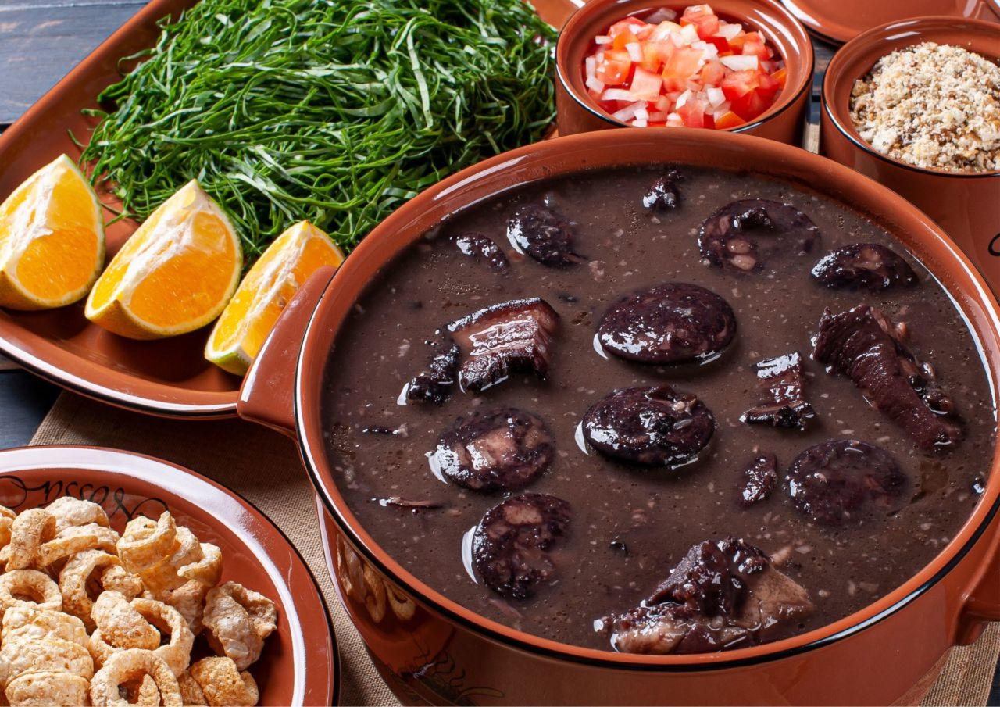

Feijoada Recipe

Description
Feijoada is a traditional Portuguese and Brazilian dish that is essentially a hearty stew
made primarily from black beans and pork. It's often considered the national dish of Brazil and is
deeply ingrained in the country's culinary culture.
Ingredients
- 500g dried black beans
- 500g mixed pork cuts (such as pork shoulder, ribs, and sausage)
- 200g bacon, chopped
- 1 large onion, chopped
- 4 cloves garlic, minced
- 2 bay leaves
- Salt and pepper to taste
- Rice, cooked, for serving
Steps
- Rinse the black beans under cold water and soak them in a large bowl of water overnight,
or for at least 8 hours.
- After soaking, drain and rinse the beans again.c
- In a large pot or Dutch oven, combine the soaked beans with enough water to cover them by about 2 inches.
c Bring to a boil over high heat, then reduce the heat to medium-low and let the beans simmer,
partially covered, for about 1 hour, or until they are tender.
- While the beans are cooking, prepare the pork cuts by cutting them into smaller pieces, if necessary.
- In a separate skillet or frying pan, cook the chopped bacon until it's browned and crispy. Remove the bacon from the pan and set it aside,
leaving the rendered fat in the pan.
- In the same skillet with the bacon fat, add the chopped onion and minced garlic. Cook over medium heat until the onion is
soft and translucent, about 5 minutes.
- Add the mixed pork cuts to the skillet with the onion and garlic. Cook, stirring occasionally,
until the pork is browned on all sides.
- Once the beans are tender, add the cooked pork mixture, crispy bacon, and bay leaves to the pot with the beans.
Season with salt and pepper to taste.
- Continue to simmer the feijoada, uncovered, for another 30 minutes to 1 hour, or until the flavors are well combined and the stew has thickened slightly. If necessary,
add more water during cooking to keep the stew moist.
- Once the feijoada is ready, remove the bay leaves and serve hot with cooked rice, orange slices,
collard greens, and farofa, if desired.